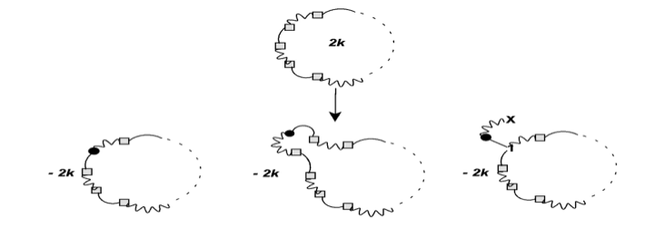

Effective Strings
&
Relational Observables
Patrick Cooper. Oral Qual 2012. CCPP


What is a string?
- An extended, effectively 1-D object. Higher dimensional effects are suppressed by the width of the string.
Examples
- Nielsen-Olesen Vortex: Solitonic object in Abelian-Higgs model
- Cosmic String: Could have formed during phase transitions in early universe.
- Fundamental Strings: Exactly 1D object, characterized by a tension, unifying GR and the Standard Model
- QCD Strings: Flux tubes of glue, "experimentally" verified, that form between quark-antiquark pairs
Dynamics
$$ X^i(\sigma,\tau) \; \; , \; \; i \in \{2,3,\cdots,D\} $$
- from the broken translation generators of Poincaré. σ and τ parameterize the 2 degrees of freedom of a scalar field confined to a string in spacetime.
- The action will linearly realize $$ISO(1,1) \; \times \; SO(D-2)$$
- In accordance with Goldstone's theorem, these scalar fields (w.r.t. worldsheet boosts) will be massless and hence described by a σ-model action with higher derivative terms suppressed by the width of the string.
Dynamics
- If the underlying UV theory is Poincaré invariant, this larger symmetry must be non-linearly realized
- Just like the CCWZ prescription for the chiral lagrangian, and Isham et al's spacetime generalization, we can connect this non-linear theory to a manifestly covariant theory
Dynamics
$$ (\sigma^{\alpha}, X^i) \rightarrow X^{\mu} $$
- We bundle the world-sheet coordinates with the transverse fields into a D-dimensional spacetime vector which becomes the embedding coordinates of the worldsheet.
$$ \mathcal{S}_{\mathrm{string}} = - \int d^2\sigma \sqrt{-\mathrm{det}(h_{\alpha \beta})} \left( l_s^{-2} + \frac{1}{\alpha_0} (K^i_{\alpha \beta})^2 + \cdots \right) $$
Dynamics
- The sigma model action describing the Goldstone degrees of freedom can then be recovered by going into the static gauge.
$$ \tau \rightarrow X^0 \equiv t $$ $$ \mathcal{S}_{N.G.} \rightarrow -T_0 \int d^2 \sigma \sqrt{(1-|\partial_t \vec{X}|^2)(|\partial_{\sigma} \vec{X}|^2) + (\partial_{\sigma} \vec{X} \cdot \partial_t \vec{X})^2} $$-
- A natural question to ask: does the manifestly covariant list of gemetric invariants, exhaust the possibilities for the effective non-linear theory?
Consider an infinitesimal D-dim Poincaré transformation:
$$ \delta X^i = -\epsilon^{aj} \delta^{i j} \sigma_a - \epsilon^{a j} X^j \partial_a X^i $$
$$ \delta(\partial_b X^i) = -\epsilon^{aj} \delta^{ij} \eta_{ab} - \epsilon^{aj} \partial_b X^j \partial_a X^i - \epsilon^{aj} X^j \partial_a \partial_b X^i $$
Solid Lines: Worldsheet saturation
Wavy Lines: Bulk saturation
$$ \partial_a X^i \partial^a X_i \\ \partial_a X^i \partial^a X^j \partial_b X_j \partial^b X_i \\ \partial_a X^i \partial^a X^j \partial_b X_j \partial^b X_k \partial_c X^k \cdots \partial^z X_i$$
Generic scaling zero variation:
Keeping track of these variations diagramatically and canceling them with higher order terms leads to the following prescription for generating non-linear invariance given a linearly invariant seed term:
The GM Procedure
$$ g_{ab} \equiv \eta_{ab} + \delta^{ij} \partial_a X_i \partial_b X_j \equiv \eta_{ab} + h_{ab} \\ t^{ij} \equiv \delta^{ij} - \partial_a X^i \partial_b X^j g^{ab} \\ \partial^3_{abc}X_i \rightarrow \nabla_{abc} X_i \equiv \partial^3_{abc} X_i - (\partial^2_{ab}X_j \partial_d X_k \partial^2_{ec} X_i g^{de} \delta^{jk} \\ + \mathrm{cyclic} \; \mathrm{permutations} \; \mathrm{of} \; abc)$$
Seed: Seed: $$ \partial_a \partial_b X^k \partial^a \partial^b X_k \;\;\;\;\;\;\;\;\; \Box X^k \Box X_k \\ \rightarrow I_1 \;\;\;\;\;\;\;\;\;\;\;\;\;\;\;\;\; \rightarrow I_2 $$
$$ I_1 = \sqrt{-g}(\partial_{ab}^2 X^k \partial_{cd}^2 X_k g^{ac} g^{bd} - \partial^2_{ab}X_k\partial^2_{cd}X_i\partial_e X^k\partial_f X^i g^{ac}g^{bd}g^{ef})$$ $$ I_2 = \sqrt{-g}(\partial_{ab}^2 X^k \partial_{cd}^2 X_k g^{ab} g^{cd} - \partial^2_{ab}X_k\partial^2_{cd}X_i\partial_e X^k\partial_f X^i g^{ab}g^{cd}g^{ef})$$
$$ I_1 - I_2 = \sqrt{-g} R $$ A simple calculation can be done, motivated by the Gauss-Codazzi relationship, to show that these invariants are accounted for in our linear Lagrangian by noting: $$ I_1 = (K_a^{ia})^2 \;\; \;\; \; \; \; \; \; \; \; \; \; \; \; \; \; \; \; \; I_2 = (K_a^{ib})(K_b^{ia})$$
..and higher order terms
Seed: $$ (\partial_a \partial^b X \cdot \partial_b \partial^c X)(\partial_c \partial^d X \cdot \partial_d \partial^a X) \\ \rightarrow I_3 $$ $$ I_3 = \sqrt{-g} t^{ij}t^{kl} \partial_{ab}^2 X_i \partial^2_{cd} X_j \partial^2_{ef} X_k \partial^2_{gh} X_l g^{ha} g^{bc} g^{de} g^{eg} $$ This is related to $$ \sqrt{-g} R_{ab} R^{ab} \; \; \; \; \; \; \; \; \mathrm{with} \; \; \; \; R_{ab} = g^{ef} t^{ij}(\partial^2_{ae} X_i \partial^2_{fb} X_j - \partial^2_{ab} X_i \partial^2_{ef} X_j) $$

Some stuff